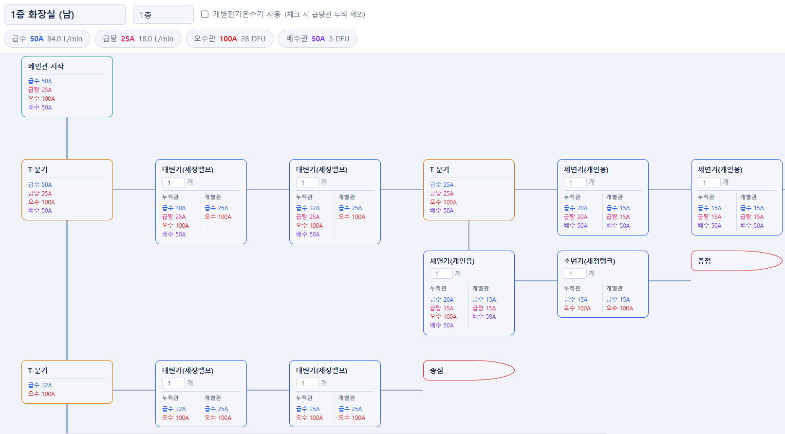
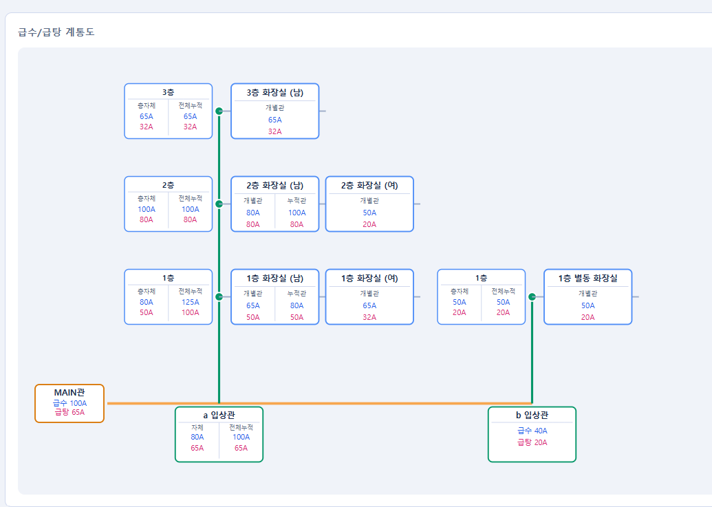
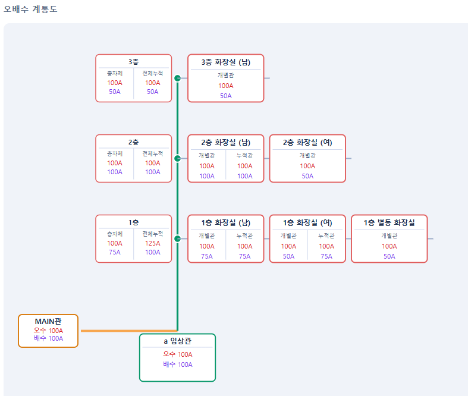
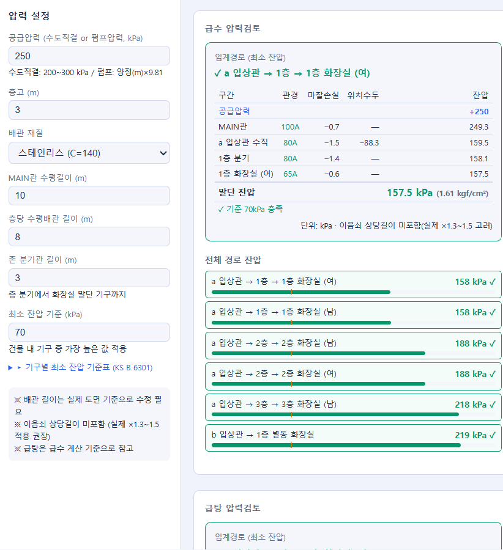

위생배관 관경 계산서
개별 화장실부터 MAIN관까지. 급수·급탕·오수·배수·통기의 관경 산정과 압력검토, 밸브·부속 수량까지 하나의 흐름으로 이어집니다.
카드 등록 없음 · 설치 없음 · 구글 로그인만 하면 바로 시작
그 모든 표와 곡선이, 이미 앱 안에 있습니다.
작동 모습
화장실에 기구를 놓는 순간 — 오수·배수·급수·급탕이 각자의 관경을 갖고 입상관으로 모입니다.
위 수치는 앱이 계산한 실제 예시입니다(1층 화장실 · 대변기 2 + 세면기 1). 직접 계산해 보려면 7일 무료로 써보기.
개별 화장실
메인관 시작에서 + 버튼으로 대변기·세면기·소변기를 잇습니다. 직진은 주관이 계속 가는 것, T 분기는 가지를 치는 것. 연결하는 즉시 구간마다 급수·급탕·오수·배수 관경이 자동 계산됩니다. 기구 하나를 고치면, 그 뒤의 모든 구간이 함께 갱신됩니다.

🔍 클릭하면 크게 볼 수 있습니다
급수 · 급탕 · 오수 · 배수
4계통 동시
구간별 관경 산정
부하단위 표 · 곡선
찾기 0회
전부 내장
화장실 요약
층별 화장실마다 기구 구성과 급수·급탕·오수·배수 관경이 한눈에 정리됩니다. 도면 옆에 띄워 두고 그대로 옮겨 적으면 됩니다.
🔍 클릭하면 크게 볼 수 있습니다
급수/급탕 연결
화장실을 층에, 층을 입상관에 배정하세요. 이 계층이 곧 계통도입니다. 층 누적 → 입상관 → MAIN관까지 관경이 자동으로 이어지고, 전기온수기를 쓰는 존은 중앙급탕에서 알아서 제외됩니다. CAD로 계통도를 다시 그릴 필요가 없습니다.

🔍 클릭하면 크게 볼 수 있습니다
층 → 입상관 → MAIN관
3단계 자동
누적 관경 산정
오배수 연결
급수와 계통이 다르면 다르게 구성할 수 있습니다. DFU 누적으로 오수·배수 관경이 층에서 입상관, MAIN관까지 산정됩니다.

🔍 클릭하면 크게 볼 수 있습니다
압력검토
공급압력·층고·배관 길이를 입력하면 임계경로의 구간별 마찰손실과 잔압을 검토합니다. 기준 충족 여부가 경로마다 표시되고, 잔압이 부족하면 업사이즈를 권해줍니다. 계산서에 근거가 그대로 남습니다.

🔍 클릭하면 크게 볼 수 있습니다
임계경로 말단 잔압
157.5 kPa
예시 결과 — 자동 검토
최소 잔압 기준
70 kPa
충족 여부 자동 판정
밸브·부속 산출
볼·앵글·WHA·온수기 세트·진공브레이커, 티·엘보·레듀서까지 자동 산출. 관경 + 밸브 + 부속 전체가 CSV 한 번으로 내려받아집니다.
가격
위생배관 관경 계산서
99,000원
1회 결제 · 기간 제한 없음
체험 중 정보를 입력하시면 14일까지 늘어납니다.
체험이 끝나도 입력하신 프로젝트 자료는 그대로 남습니다.
결제는 계좌이체로 진행되며, 앱 안에서 신청하면 계좌를 안내해 드립니다.
사업자 등록 전이라 세금계산서·현금영수증은 발행해 드릴 수 없습니다.
회사 경비 처리가 필요하시면 결제 전에 확인해 주세요.